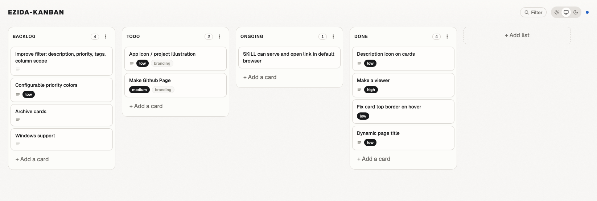

A Kanban board
your agents can drive.
Ezida is a file-based Kanban for software projects.
One Go binary, one versioned kanban.toml at the repo root —
no server, no database. Driven from the CLI, or by any AI assistant
that reads Claude Code skills.
Built for humans and agents.
Humans and AI assistants share one source of truth — the
kanban.toml file in your repo. No separate service to integrate, no API
keys to provision, no permissions to grant. The agent runs the same CLI a human would.
From the terminal
$ ezida list --column=todo
$ ezida add "Refactor auth" --column=todo --priority=high --tags=security
$ ezida move a3f2k9 ongoing
$ ezida edit a3f2k9 --priority=medium
$ ezida rm a3f2k9 --yesFrom an agent
"Add a high-priority card 'Refactor auth' to todo, tagged security."
"Move card a3f2k9 to ongoing."
"What's in the todo column?"
With .claude/skills/ezida-kanban/SKILL.md committed,
Claude Code (and any agent that reads
Claude Code skills)
picks it up automatically and runs the same commands on your behalf.
Prefer a visual board? Run one command.
ezida serve launches a local Web UI bound to 127.0.0.1:7777
and opens it in your default browser. The page is read and write:
click a card to edit inline, drag to reorder or move between columns,
add columns from the header, filter, switch theme.
It hot-reloads on every change to kanban.toml — yours, the CLI's, or the agent's.

ezida serve web UI, hot-reloading from kanban.toml.Try the live demo → In-memory · changes don't persist · uses Ezida's own kanban.toml.
One command. macOS or Linux.
The installer detects your OS and architecture, downloads the matching tarball plus
checksums.txt from the latest GitHub Release, verifies the SHA256, and
installs ezida to ~/.local/bin/ezida.
$ curl -sSL https://github.com/nicolasvergoz/ezida-kanban/releases/latest/download/install.sh | sh
Supported: macOS (arm64, amd64), Linux (arm64, amd64).
Pin a version with EZIDA_VERSION=v0.2.0.
Manual install →
Then, in any repo
$ cd my-project/ $ ezida init
Creates kanban.toml at the project root and
.claude/skills/ezida-kanban/SKILL.md — the embedded skill for AI assistants. Commit both.
Three constraints, one tool.
Ezida is opinionated about what it isn't. The board is a file. The file is in git. Everything else follows.
-
File-based
The board is a single TOML file at the repo root. Branches, PRs, blame and history all apply — because the board is code.
-
No server
One Go binary, around 10 MB. No database, no daemon, no account. The Web UI binds
127.0.0.1on demand. -
Versioned by default
Every move is a commit if you want it. Branch the board, review changes in a PR, roll back — the way you do code.
-
CLI-first
add,move,list,edit,rm. Fast, scriptable, pipeable. -
Local Web UI
ezida servelaunches a hot-reloading board on127.0.0.1:7777. Drag, edit, filter, theme. -
Agent-ready
An embedded
SKILL.mddrops in your repo atinit. Claude Code picks it up automatically.
Why "Ezida"?
Ezida (literally House of Truth, from the Akkadian é-zi-da) was the temple of Nabu — the Mesopotamian god of writing, scribes, and record-keeping — located in Borsippa, near Babylon.
More than a place of worship, it was one of the great archives of the ancient world. Thousands of cuneiform tablets were stored there, with scribes meticulously copying, cataloguing, and signing their work: early librarians, in a sense.
The name felt right for a tool whose job is exactly that — a small, versioned place that lives in your repo, where a project keeps track of what it's working on, what's done, and what's still ahead.
The roadmap is, fittingly,
a kanban.toml.
Ezida tracks its own work in the same format you'll use.
Browse the live board: kanban.toml on GitHub,
or try the live demo → to interact with it.